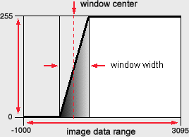

The ContrastControl module (Contrast in short) is an extension to the OrthoSlice and ObliqueSlice modules. It is particularly useful for the gray or color value analysis of scalar fields like 3D image data, as well as a preliminary stage for image segmentation. It allows a fast and intuitive adjustment of the transfer function, mapping scalar values stored with the image data to those values used for visualization.
With the help of ContrastControl the linear mapping of the data values to a subset of scalar values or indices to color values, defined by a Colormap, can be modified. The term windowing is often used within this context. The window defines a possibly narrowed view to the data's scalar values, for enhancing the contrast of certain structures within the image data. The width of the window defines the range of data values between a lower and an upper threshold which shall be mapped to a range of values specified by the height of the window. In terms of gray value mapping a subset of thousands of possible data values can be mapped to i.e. 256 gray values, linearly distributed on a ramp, varying from black (0) to white (255). Black values are represented by the lower border of the window and white values by the upper border. The center of the window might be located at any value of the image data, thus the entire window can be shifted to various points for data evaluation.

The window's center and width can be modified with the two sliders in the Properties Area of the Contrast module. These values can either be adjusted by shifting the sliders to the left or right, varying the values by a certain percentage of the image data range, or they can be specified numerically via the appropriate entry fields.
For an overview of the current mapping, a graphical representation of the mapping function can be displayed within the viewer window. In order to do so the toggle button in the Properties Area with the Window Show label must be activated. The horizontal extent of the window graph specifies the image data range from the lowest to the highest value. The linear ramp indicates the mapping function where the area below or above the ramp represents the currently chosen mapping window .
Experienced users can directly use the mouse for a fast and simultaneous modification of the window's center and width. The contrast can be adjusted via the left mouse button while the shift button is pressed. Moving the mouse to the left or right moves the center of the window accordingly. Up and down movements increase or decrease the width of the window. A vertical line (that means lower and upper threshold are identical respectively the window width equals zero) indicates a binary mapping of the image data values. All values below the window's center will be mapped to black and all other values will be mapped to white. Moving the mouse further down will invert the mapping, thus exchanging black and white values.
Connection to the scalar field is automatically established via the OrthoSlice module.
This port is only visible when Window Show is enabled. The input values are the X- and Y position of the graph within the viewer. The lower left corner of the viewer has the coordinates (0, 0). Negative coordinates are relative to the right respectively upper border of the viewer. Both values can also be modified by moving the mouse pointer into the appropriate entry field, pressing the shift key and moving the mouse.
Setting verboseMode to a value not equal to zero leads to a permanent refresh of the current data window settings via the mapping port. Due to the possibilities of changing the window settings quickly this leads to flickering results and furthermore reduces the interactive adjustment speed. A value of 0 is the default.
This is just a command line interface for the window port, bringing the window graph up front.
This is the counterpart to showWindowGraph, removing the window graph.
Prints out a short info to the ContrastControl module.
Using setLineColor you can change the visual appearance of the window graph. This is useful when the currently chosen background color interferes with the line color of the graph. The RGB triple specifies how much a certain color component contributes to the resulting color. These values are clipped to 0 and 1.
Direct contrast adjustment with the mouse (Shift - Left Mouse Button) in interactive mode can be amplified or damped using this command. The default value is 0.5 times 1 percent of the total image data range. The value is clipped to 0.1 and 1
The position of the window graph can be modified with setPosition. Negative values are relative to the right and upper border of the viewer. If no window graph appears with showWindowGraph try setPosition 0 0 which should set the display to the lower left corner.
The size of the window graph can be modified using setScaleFactor. This might be useful if the window graph is disturbing the visual output of the viewer.